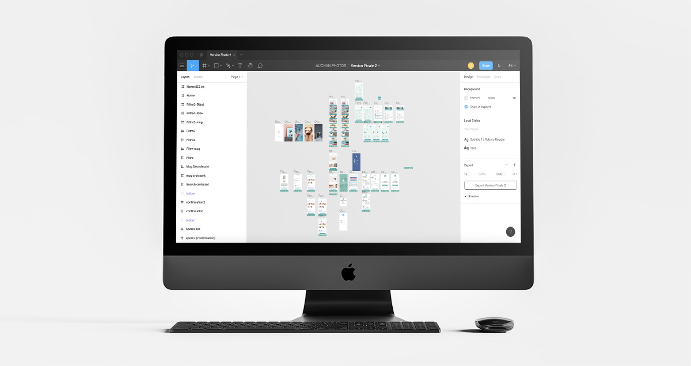
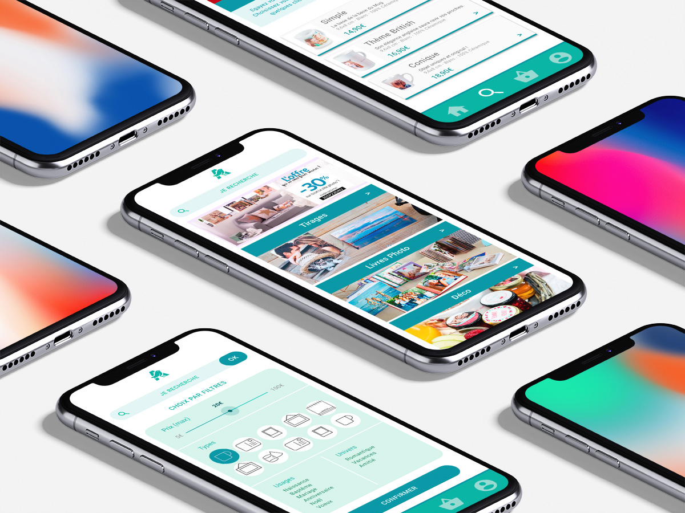

Jean-François Hache
Designer UX/UI
¬ Projet 1 - Auchan photo

Projet
Ajouter de la perso dans une application de e-commerce.Équipe :
Awa
FacilitatriceInterviewer
Alex
Hélène
Jeff
DécideurKaouther
Pourquoi cette application :
Beaucoup de mauvais avis sur les apps store, mais c'est surtout un univers sympa ;)Comment pourrions-nous CPN (par ordre d'importance) :
- Personnalisé le tri et filtre (3)
- Améliorer la fiche produit (2)
- Pas de barre de recherche (2)
- Améliorer l'interface de l'accueil (1)
- Avoir un aperçu du produit finalisé (1)
- Simplifier la création de compte utilisateur (1)
- Parcours trop difficile à comprendre (1)
Persona :
- Nouvel utilisateur - adulte
- Contraintes et frustrations : Il ne sait pas où acheter un mug personnalisé
- Motivations et attentes : S'acheter un mug personnalisé pour le travail - en livraison - il sait que Auchan propose se service
- Journée type : Il travaille la semaine
- Personnalité : Il aime le café
- Outils : Mobile
Objectif :
L'utilisateur souhaite grâce à l'application Auchan photo, acheter un mug classique, le personnaliser en y ajoutant une de ses photos, et se le faire livrer rapidement.Parcours utilisateur :
- Onboarding
- Accueil / Recherche
- Tri
- Sélection produit
- Fiche produit
- Personnalisation
- Création de compte
- Panier
- Paiement / livraison
- Confirmation
Découverte :
- Moteur de recherche
- Bouche à oreille
- Notoriété enseigne
- Pub Ad
- Blog
Après :
- Récompense (réductions...)
- Mail confirmation commande
- Mail de suivi livraison
- Newsletter
- Avis après reception colis
Benchmark :
- Lalalab
- Fnac photo
Prototype :
- Lalalab
- Fnac photo
